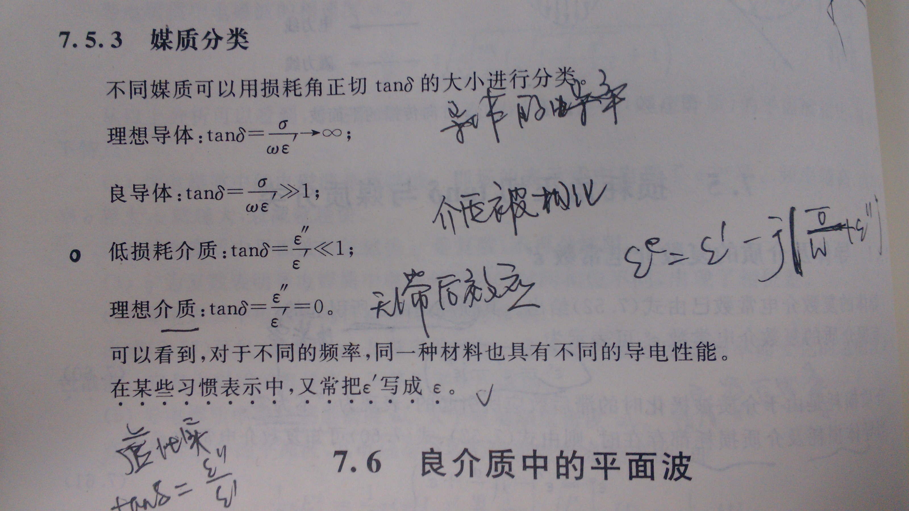

MelonLin的缤纷世界
点点滴滴的记载
微带电路的损耗分成三个部分：
-
介质损耗
-
当电场通过介质时，由于介质分子交替极化和晶格来回碰撞，而产生的热损耗。这PCB电路板的材料有关。参考介质常数与损耗正切角
-
导体损耗
-
微带线的导体带条和接地板均有有限的电导率（电阻率），电流通过的时候必然引起热损耗。在高频的情况下，趋肤效应减小了微带导体的有效截面积，更增大了这部分的损耗。由于微带横截面尺寸远小于同轴线和波导，导体损耗也较大，是微带线损耗的主要部分。
-
辐射损耗
-
由微带线的半开放性所引起，减小线的横截面尺寸时，这部分损耗即很小，而只在线的不均匀点才比较显著。避免辐射，减小衰减，应做好阻抗匹配，比较传输电路的不连续性和不均匀性。

MelonLin © 2013 www.MelonLin.com(Not Built)